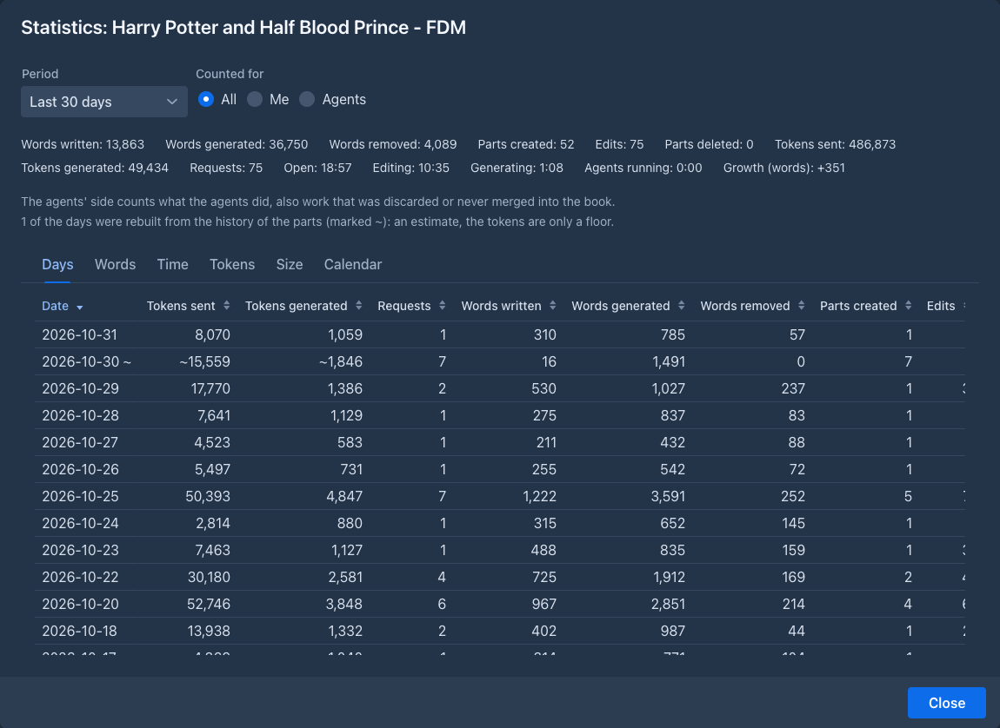
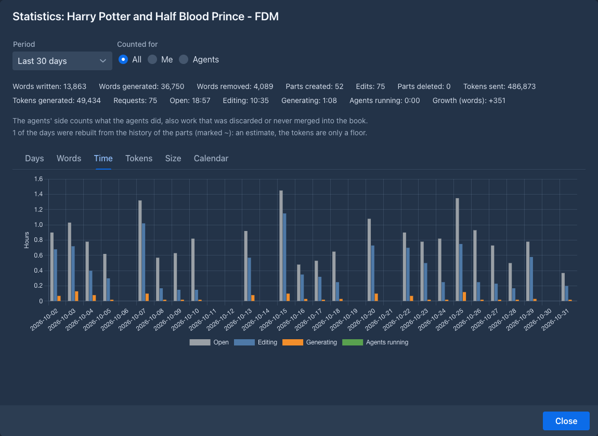
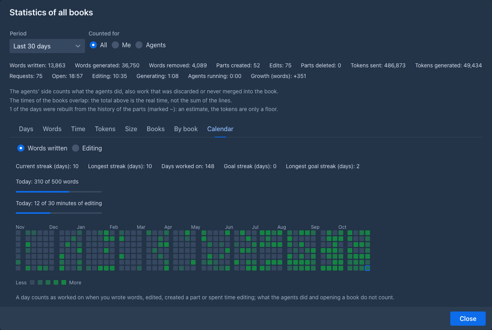
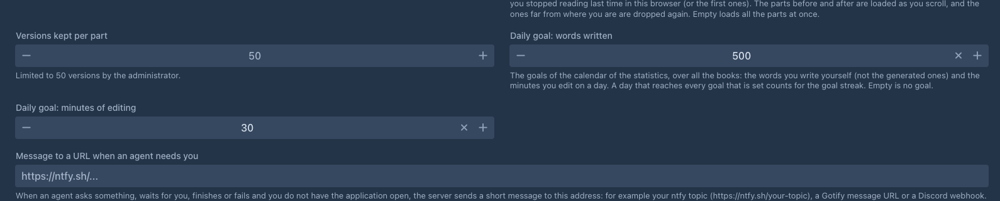
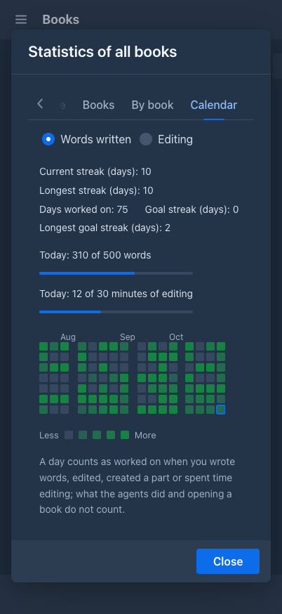

Writing statistics
Marginalia keeps count of what happens to your books, day by day: how many words you wrote and how many the models wrote, how long you were writing, how many tokens were sent to the models, how big the book got. The Statistics window shows it for one book or for all of them, as numbers, charts and a calendar of the days you worked, with your streak and a daily goal.
The numbers are only for you: every account sees its own books. The counting starts with version 1.6.0; what happened before is
Opening the window
- One book: the settings menu (the cogs under the story) has Statistics. The window counts that book.
- All books: the list of books has a Statistics button in its header. The window adds all your books up and has two more tabs, Books and By book.
Both windows work the same way. On top you choose the Period (Today, Yesterday, Last 7 days, Last 30 days, This month, All time, or Custom with a From and a To date) and Counted for: All, Me (you and the models you asked) or Agents (what agents did, which is kept apart). The days are the days of the server's clock.

Below the choice are the totals of the period, then the tabs.
What is counted
The times are the real clock. When two books are open at once, or three agents run together, the total counts that stretch of time once, so the lines of the books can add up to more than the total (the window says so). The words and tokens do add up.
Importing a book or a text (an archive, a chat from SillyTavern), copying a book and restoring a backup count nothing: the text was not written here. What the agents do is counted on their side (Agents), against the original book, although they work on a copy; it includes work that was discarded or never merged into the book.
The tabs

The size of a book is measured a moment after it changes, from the words and tokens the parts have saved. The tokens of an old part are the ones counted when it was written, so changing the model of the book changes no number.
The calendar
The Calendar tab shows a small square for every day of the last year (53 weeks, 16 on a phone), a week to a column and the
newest day in the bottom right corner, marked with a frame. The darker the square, the more you did that day. Hold the pointer
over a day to see the date, the words you wrote, the time you edited and when you were last at it (a ~ after a day that was
rebuilt from the history).

A day counts as worked on when you wrote words, edited a part, created a part or spent time editing. What the agents did, words that were only generated and opening a book do not count: the calendar is about your writing. A square that is only a little darker than an empty one is a day you worked on but wrote little.
Choose how the squares are shaded with Words written or Editing (minutes of editing). The calendar always shows the latest weeks, whatever Period is chosen above it.
Above the calendar:
The daily goal
Set a goal in the Settings tab, in the general settings:

Leave a field empty for no goal. With both set, a day reaches the goal when it reaches both. The window of all books then shows how far you are today as two bars (Today: 310 of 500 words), the shade of the calendar follows the goal (a day that reached it is the darkest), and the Goal streak counts the days that reached it. Without a goal, the shade follows your busiest day of the calendar. The window of a single book has no goal (a goal over all books means little for one of them): its squares are shaded against the busiest day of that book.
When a day has no recorded time (see below) and the calendar is shaded by Editing, it is only marked as a day that was worked on.

Days before the statistics
The statistics were not kept before version 1.6.0. When Marginalia was updated, it rebuilt the days before from the history of
the parts: the first version of a part is a part created with the words it had, a later one is an edit, and a part that is gone
is a delete. These days are an estimate. They are marked with a ~ in the list of days and the window says how many there are;
the tokens of a rebuilt day are only a floor. The time cannot be rebuilt, because nobody recorded it: the window says from which
day it is recorded (The time is recorded from ...), the days before it show a dash and are left out of the time chart. The
calendar counts a rebuilt day as worked on, like any other.
Commands
Two commands read the same numbers: /get-book-statistics [range] [side] for the open book, day by day, and
/get-statistics [range] [by] [side] for all your books, by day or by book. The range is today, yesterday, last-7-days,
last-30-days, this-month, all-time, a day (2026-03-14) or two days (2026-03-01..2026-03-14). An
agent may use them as well.